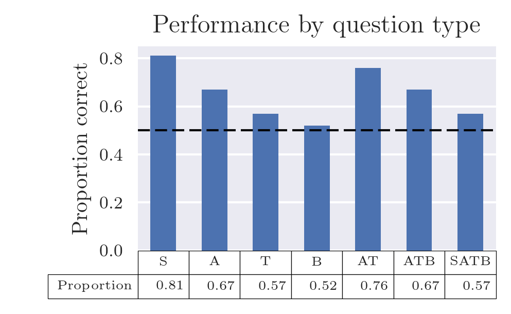
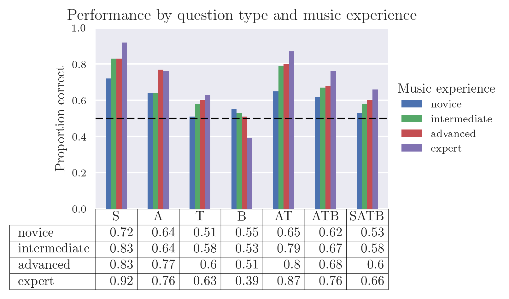

BachBot
Automatic stylistic composition
Feynman Liang
Gigster, November 30, 2016
Overview
- Music theory primer
- Corpus preparation
- Neural networks primer
- Results and analysis
- Musical Turing test
Music theory primer
Piano Roll

Sheet Music

Corpus preparation
Transpose/Quantize


Handling Polyphony
- The number of chords that can be constructed using 4 voices, each with 128 pitches, is on the order of $O(128^4)$
Handling Polyphony
- Reduce vocabulary size by treating parts independently
- SATB ordering

START
(59, True)
(56, True)
(52, True)
(47, True)
|||
(59, True)
(56, True)
(52, True)
(47, True)
|||
(.)
(57, False)
(52, False)
(48, False)
(45, False)
|||
(.)
(57, True)
(52, True)
(48, True)
(45, True)
|||
END
Corpus statistics


Neural networks primer
Neurons

Feedforward Network

Memory Cell

LSTM


Results and analysis
Neuron activations

Model learns music theory

Model Outputs
Harmonization

Music Turing Test
Participants

Participants

Results

Results

Conclusion
Conclusion
- Model learns music theory without prior knowledge, empirically validating theory
- Average user performs only 9% better than random guessing
-
Future work:
- Account for future in harmonization
- Investigate orderings besides SATB / other ways to reduce vocabulary
- Try other corpuses
Questions?
Thank You!
Feel free to reach out to me:
feynman@gigster.com